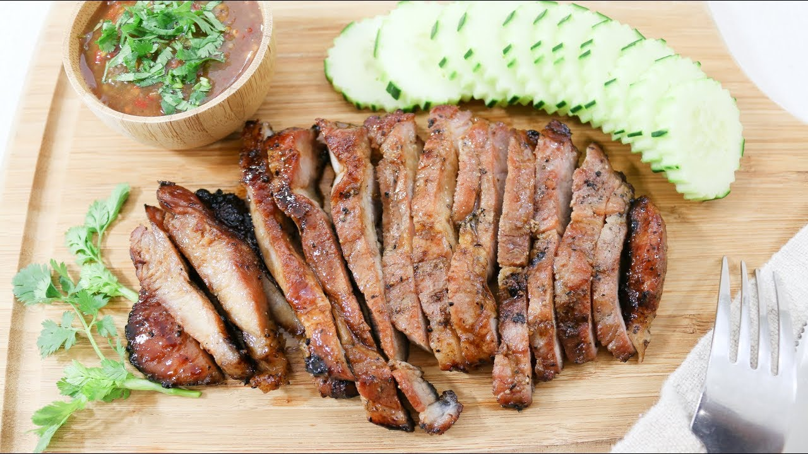

Kor Moo Yang คอหมูย่าง - Thai Grilled Pork Jowl

Delicious Grilled Pork Neck
This traditional Thai dish is extremely delicious and easy to make. It is
traditionally paired with sticky rice and nam jim jaew sauce.
This dish has an amazing aroma and texture. It is commonly associated with
the Northeast or Issan part of Thailand.
Ingredients
- 1½ tablespoons of oyster sauce
- 1½ tablespoons of soy sauce
- ½ tablespoon of black soy sauce
- 1 tablespoon of ground white pepper
- 1 tablespoon of water
- 1½ pounds of pork neck (jowl)
Steps
-
In a large bowl, combine the oyster sauce, soy sauce, black soy sauce,
ground white pepper, and water to make a marinade.
-
Add the pork beck to the bowl. Take a fork and prick some holes into it
so that the pork will absorb the marinade.
-
Cover the bowl with food wrap and marinate in the refrigerator for 30
minutes
-
After 30 minutes, heat your oven to 225℃. Place the pork on a
grilling rack and cook for 30 minutes, turning the other side up halfway
through.
-
Turn off the oven. Transfer the pork to a cutting board and slice to
serve.